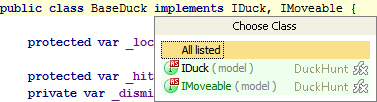

You can view all the methods of the implemented interfaces in a class if you place the caret at the implements keyword in the class declaration, press &shortcut:HighlightUsagesInFile;, and select the desired interface from the list.
